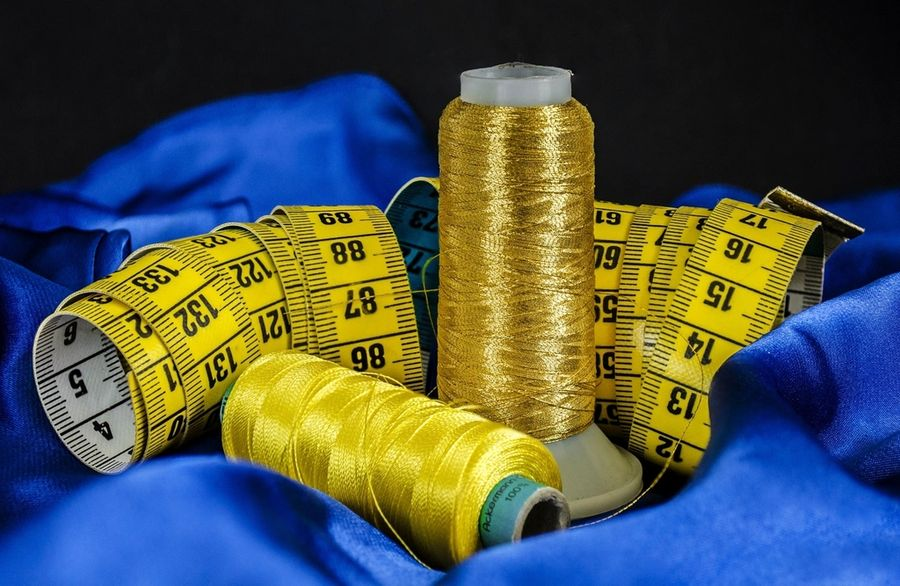
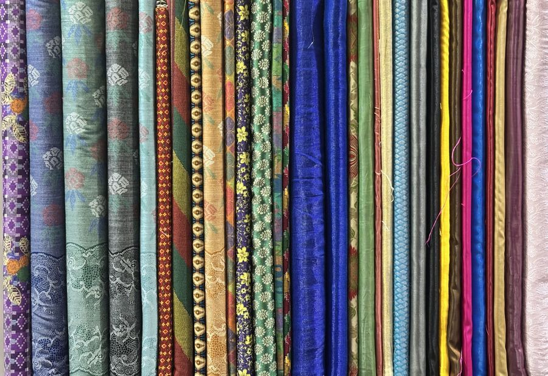

Ana sayfa / Özel dikim
Ölçüden teslime kişiye özel dikim
Hazır giyim bir ortalamaya göre kesilir; sizin omzunuz, kolunuz, duruşunuz o ortalamada olmak zorunda değil. Özel dikimde kalıp sizin ölçünüzden çıkar. Bu sayfa, kapıdan girmeden önce sürecin tamamını görmeniz için.
Mezuranın üstünde altı durak
Özel dikim genellikle şu sırayla ilerler. Kaç prova gerekeceği modele ve kumaşa göre değişir; sizin işiniz için geçerli olanı ilk görüşmede konuşuruz.
-
Görüşme
Ne dikilecek, nerede ve hangi mevsimde giyilecek? Model ve kumaş bu konuşmadan çıkar. Beğendiğiniz bir ceketin kendisi ya da fotoğrafı iyi bir başlangıçtır.
-
Ölçü
Mezurayla beden ölçüleri alınır. Rakamların yanına duruş, omuz eğimi, iki kol arasındaki fark gibi ayrıntılar not edilir; ölçü kartınız böyle oluşur.
-
Kalıp ve kesim
Ölçülerden kalıp çıkarılır, kumaşa yatırılır, terzi sabunuyla çizilip kesilir. Çizgili ve kareli kumaşta desenler bu aşamada birbirine denk getirilir.
-
Prova
Parça teyelle, yani geçici iri dikişle tutturulmuş haliyle üzerinizde denenir. Omuz, bel, kol ve boy burada düzeltilir; cep ve düğme yerleri işaretlenir.
-
Dikim ve ütü
Düzeltmeler kalıba işlenir, parça kalıcı dikişle dikilir. İlikler açılır, astar kapatılır; son biçimi ütü verir.
-
Teslim
Biten parçayı giyersiniz, aynada birlikte bakılır. Küçük bir rötuş gerekiyorsa o anda not edilir.

Ölçü kartı: nereden, nasıl ölçülür?
Kesin ölçüyü atölyede usta alır. Yine de evde bir ön ölçü almak hem neyin konuşulacağını bilmenizi sağlar hem ilk mesajınızı somutlaştırır. Bir satıra dokunun, ölçünün yerini şekilde görün; isterseniz rakamı yazın.
Göğüs
Bir satır seçtiğinizde ölçünün nasıl alındığı burada yazar.
Ölçü kartı
Mesajınız hazır
Yazdığınız rakamlar yalnız bu mesaja eklenir, hiçbir yere kaydedilmez. Boş bıraktığınız satırlar mesaja girmez.
Kumaş kartelası: altı dokuma, altı karakter
Kumaşı seçmek, modeli seçmek kadar belirleyicidir. Aşağıdakiler ceket ve takımda en sık karşınıza çıkacak dokumalardır.
Balıksırtı
Kırık V çizgileriyle dokunur. Kışlık ceket ve paltonun klasiğidir; dokulu yüzeyi küçük kırışıklıkları ve tüylenmeyi saklar.
İnce çizgili
Koyu zemin üzerinde iğne ucu inceliğinde açık çizgiler. Takım elbisede resmî durur, dikey çizgi boyu uzun gösterir.
Ekose, kareli
Spor ceketin kumaşıdır. Dikişlerde karelerin birbirini tutması gerekir; bu yüzden daha fazla kumaş ve özenli kesim ister.
Kuşgözü
Uzaktan düz, yakından minik noktalı görünür. Düz kumaştan daha canlı, çizgiliden daha sakin; iş takımı için güvenli seçimdir.
Serj
Yüzeyinde ince çapraz yollar olan düz renkli yün dokuma. Kolay kırışmaz, dört mevsim giyilen takımların çoğu bu dokumadandır.
Keten
Yazın en serin tutan kumaştır, hava alır. Kırışır; bu bir kusur değil, kumaşın karakteridir. Karışımlı ketenler daha az kırışır.
Atölyede hangi kumaşların bulunduğunu ya da kumaşı kendiniz getirip getiremeyeceğinizi sorun, bilgi verelim.

İlk görüşmede sorulacak altı karar
Terimleri önceden bilirseniz ne istediğinizi anlatmak kolaylaşır. Kararsız kaldığınız yerde ustanın önerisini isteyin.
- Ön: tek sıra, kruvaze
- Tek sıra düğmeli ceket her ortama uyar, açık da giyilir. Kruvaze, yani çift sıra düğmeli ceket daha resmî durur ve kapalı giyilir.
- Yaka: çentik, sivri, şal
- Çentik yaka iş ve günlük takımın standardıdır. Sivri yaka omzu geniş gösterir. Yuvarlak dönen şal yaka smokine özgüdür.
- Yırtmaç: tek, çift, yok
- Çift yırtmaç otururken ve elinizi cebinize sokarken ceketin toplanmasını azaltır. Tek yırtmaç daha spor, yırtmaçsız arka daha resmîdir.
- Cep: kapaklı, fileto, yama
- Kapaklı cep klasiktir. Fileto cep ince bir yarıktan ibarettir, sade ve resmî durur. Yama cep kumaşın üstüne dikilir, spor ceketlere yakışır.
- Astar: tam, yarım, astarsız
- Tam astar ceketi korur ve kışın sıcak tutar. Yarım astarlı ya da astarsız ceket yazın daha serin olur; iç dikişlerin temiz çalışılmasını gerektirir.
- Pantolon: pile, paça, bel
- Önü pileli mi pilesiz mi olsun, paça ne genişlikte bitsin, duble paça ister misiniz, bel kemer köprülü mü yandan ayarlı mı? Paça kırımı rehberine de göz atın.
Provaya gelirken
Prova, parçanın size son kez "sorulduğu" andır. Ne kadar gerçek hayattaki gibi denerseniz sonuç o kadar doğru çıkar.
- O kıyafetle giyeceğiniz ayakkabı ve gömlekPaça boyu ayakkabıya, kol boyu gömlek manşetine göre ayarlanır.
- Cebinizde taşıdıklarınızTelefon ve cüzdan cebe girince ceketin duruşu değişir; provada gerçekte nasıl kullanacaksanız öyle deneyin.
- Hareket edinKolunuzu kaldırın, oturun, eğilin. Sıkan, çeken, bol gelen yeri o anda söyleyin; "idare eder" demeyin.
- Kilonuzda değişiklik bekliyorsanız söyleyinİçeride bırakılacak dikiş payı buna göre düşünülür.
- Giyeceğiniz gün belliyse ilk görüşmede belirtinDüğün, mezuniyet, iş görüşmesi gibi bir tarih varsa plan ona göre konuşulur.
Özel dikim hakkında sorulanlar
Özel dikim ne kadar sürer?
Modele, prova sayısına ve atölyenin o dönemdeki yoğunluğuna göre değişir. Belirli bir tarihe yetişmesi gerekiyorsa ilk görüşmede söyleyin; teslim günü buna göre konuşulur.
Prova gerekli mi?
Daraltma ve dikim işlerinde doğru sonuç için prova yapıyoruz. Kaç prova olacağı modele ve kumaşa göre değişir.
Evde aldığım ölçüyle dikim olur mu?
Ön ölçü fikir verir, ama kalıp için ölçü atölyede alınır. Duruş, omuz eğimi ve iki taraf arasındaki farklar mezuradaki rakamdan anlaşılmaz; ustanın görmesi gerekir.
Kumaşı kendim getirebilir miyim?
Sorun, bilgi verelim. Getirmeyi düşündüğünüz kumaşın enini, uzunluğunu ve varsa cinsini yazarsanız yetip yetmeyeceği daha kolay söylenir.
Hangi parçalar dikiliyor?
Aklınızdaki parçayı sorun, bilgi verelim. Bir fotoğraf ya da örnek parça, tariften çok daha hızlı anlaşmanızı sağlar.
İlk adım bir görüşme
Konuyu "özel dikim için ölçü ve görüşme" seçin, size uyan günü işaretleyin.